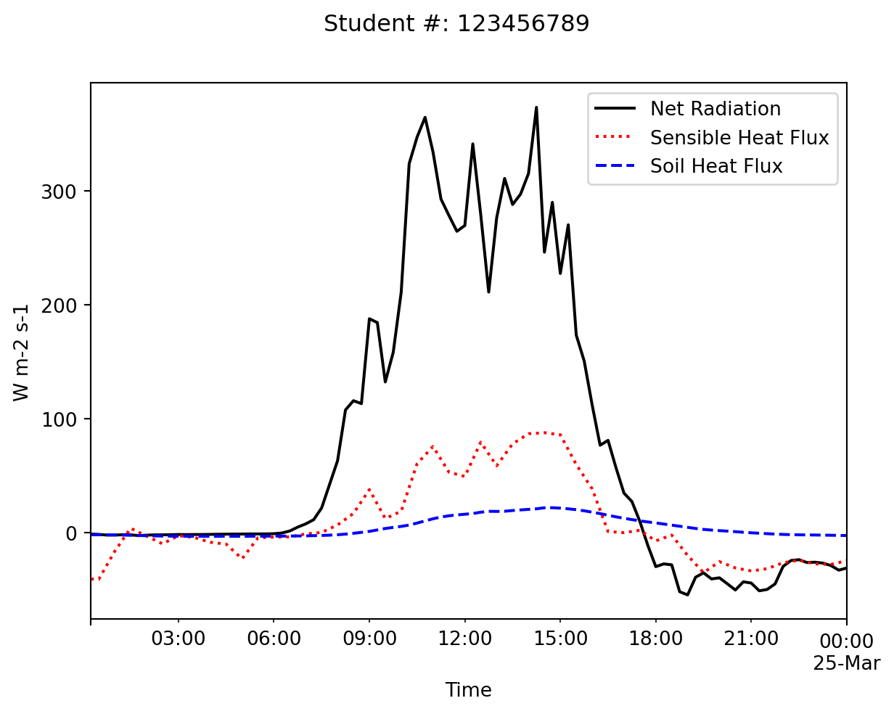

It is strongly recommended that you complete the assignment in Python or R, although you can complete it in excel/numbers if necessary. They will download the data for you and get you started with a few blocks of code to make plots and tables. If you are electing to complete the lab in excel, you can find all the relevant data files here here. Note these data are in .csv format. If you plan to work in excel, you should save a copy of the data in a suitable excel format (e.g., .xlsx) before making any charts or doing any calculations.
Please upload your answers including all calculations, discussions, tables, and graphs in a single document (PDF or HTML file). Note that you can download your .ipynb file under ‘File \(\gg\) Download as \(\gg\) HTLM or PDF via Latex’ and submit this as your report. Label the report document with your name and your student number. Upload your answers to Canvas. Do not attach a spreadsheet.
Make Sure your student number is include on each plot you produce, and that each plot is using the correct units.
Westham Island Energy Balance
You have been randomly assigned a single day of data from the Westham Island energy balance station based on your student number (Table 1). Refer to the metadata for a description of the data with variable names, units, and sensor depths. You can see this lecture slide for a photo of the station.
The soil at the climate station has been analyzed in the UBC Soil Water Atmosphere Lab and the following values were determined: porosity is \(P=0.57\), bulk density of the dry soil is \(\rho_{dry} = 1.13\) Mg m\(^{-3}\). The soil organic mass fraction was determined 3.77 % (of total dry soil mass). Assume that those values apply to the entire vertical profile.
Table 1: The date you are responsible for analyzing in YYYY (Year) MM (month) DD (day) format. The filename for your date will follow this format: YYYYMMDD.txt. e.g., 20240214.txt would be the file for February 14th, 2023. If you are completing the assignment using Python or R, just edit the filename in the corresponding template. If you are completing the assignment by hand or in excel, you can find the data files here.
Last digit of student number
date (YYYMMDD)
0
20090614
1
20090630
2
20090701
3
20090702
4
20090711
5
20090716
6
20090721
7
20090729
8
20090730
9
20090802
Data imported and gap-filled successfully.
T_1
T_2
T_3
T_4
H_g
WVC
R_n
H
H_filled
TIME(PST)
2009-03-24 00:15:00
0.844
1.110
1.383
1.313
-1.88
0.366
-1.2
NaN
-40.7
2009-03-24 00:30:00
0.822
1.112
1.372
1.307
-1.86
0.367
-1.5
-40.7
-40.7
2009-03-24 00:45:00
0.817
1.089
1.358
1.316
-1.89
0.367
-2.1
NaN
-28.5
2009-03-24 01:00:00
0.797
1.093
1.381
1.330
-1.98
0.367
-2.1
-16.3
-16.3
2009-03-24 01:15:00
0.788
1.060
1.382
1.333
-2.12
0.368
-1.8
NaN
-6.2
Question 1
Run the code block above, making sure you’ve edited the file name so that it corresponds to your assigned date (Table 1). Then in the space below, calculate descriptive statistics for the all the variables in the dataset. Comment on the mean value and the range (max-min) of the four soil temperature variables. Hint you can refer to Assignment 1 for the appropriate commands to list descriptive statistics of a dataset.
Question 2
First we’ll make a plot of net radiation (\(R_n\)), sensible heat flux (\(H\)), and ground heat flux (\(H_g\)). Describe the patterns you see here and discuss how these three components of the energy balance compare to one another at this site.
Text(0.5, 0, 'Time')

Question 3
Using the above code as a template, create another plot showing the four soil temperature observations over the 24 hour period. Describe the patterns you see here: discuss how the soil changes with depth and through time over this day.
Question 4
The code block below will give the first and last record in the dataset. You can use this to calculate the net warming/cooling of the soil over the 24 hours for each depth (5 cm, 10 cm, 20 cm and the 50 cm), i.e. the temperature change from midnight to midnight. Speculate what caused the warming or cooling observed if there was any.
T_1
T_2
T_3
T_4
TIME(PST)
2009-03-24 00:15:00
0.844
1.110
1.383
1.313
2009-03-25 00:00:00
2.114
2.516
2.351
1.317
Question 5
Using daily average soil temperature for each of the four depths (\(T_1\) to \(T_4\)), determine the direction (away from or towards the ground surface) of the daily total \(H_g\) in the soil layers from 5 - 10 cm, 10 - 20 cm and 20 - 50 cm?
Question 6
Calculate the daily total of \(H_g\) at 7.5 cm depth in \(\textrm{MJ}\, \textrm{m}^{-2}\, \textrm{day}^{-1}\) using the measured values from the soil heat flux plate. Compare the direction of \(H_g\) to the direction of the heat flux obtained for the 5 -10 cm layer in question \(5\).
T_1
T_2
T_3
T_4
TIME(PST)
2009-03-24 00:15:00
0.844
1.110
1.383
1.313
2009-03-25 00:00:00
2.114
2.516
2.351
1.317
Question 7
Find a method to estimate the thermal conductivity of the soil \(k\) at noon that day. Is \(k\) constant throughout the day?
Question 8
Find a method to estimate soil’s heat capacity \(C\) using the change in mid-day soil temperatures over a two-hour period. Use the near-surface observations for you calculations (5 and 10 cm). Hint: the exact choice of timestamps is up to you, but keep in mind the timestamp corresponds to the end of the averaging periods. This means a timestamp of 12:15, corresponds to the interval 12:00-12:15, and the center point of the observation period would be 12:07.5.
Question 9
Calculate the heat capacity \(C\) of the soil using the lab analysis results (see introduction text) and measured soil water content \(\theta_w\). Does your value obtained agree with \(C\) calculated based in the question above? Why or why not? Note For subsequent calculations, use the value of \(C\) from your answer to this question, and not \(C\) from your answer to the previous question.
Question 10
With \(C\) from the question above, calculate the depths where you expect the amplitude of the diurnal and yearly waves to drop below 5% of the amplitude of the sinusoidal surface temperature wave.
Question 11
The soil heat flux density \(H_g\) is not measured at the surface, but rather at 7.5 cm depth. Using \(\Delta T_1 / \Delta t\) as a surrogate for the average warming / cooling rates in the whole layer from 0 to 7.5 cm, correct the soil heat flux density and find the value at the surface \(H_{g(0)}\) at 10:00 and at 19:00.
Question 12
Draw a graph of \(R_n\) (\(x\)-axis) against \(H_g\) (\(y\)-axis). Might we use \(R_n\) to predict \(H_g\) at 7.5 cm depth? What do we call this curve’s characteristic? Explain the physical reason for the curve’s shape.
Question 13
Calculate the thermal admittance of the atmosphere \(\mu_a\) at noon.
Question 14
The Bowen ratio \(\beta\) describes the ratio between the sensible and latent heat flux densities directed into the atmosphere, i.e. \(\beta = H/LE\). Calculate \(\beta\) from the available data for noon that day. Neglect the energy use for photosynthesis.